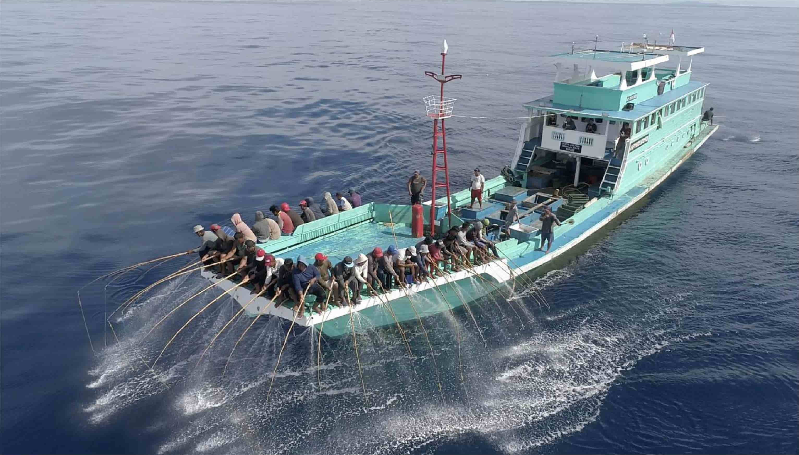

United Nations In Indonesia
Country Results Report 2021
Land and Marine Ecosystems, Habitats and
Species Protected

The Indonesian archipelago’s unique geological position—between the Eurasian, Filipino, and Australian tectonic plates—contributes to it being among the world’s most biodiverse countries. However, rapid industrial development and population growth have put biodiversity at risk. The UN is working with the Government to ensure that raising living standards for Indonesia’s human population does not come at the expense of the more than 300,000 wildlife species that also call the archipelago home.
A UN project to combat the illegal trade in endangered species led to the development of Indonesia’s first-ever national strategy to combat illegal wildlife trafficking in 2021, which is now awaiting legalization. The UN also supported 17 anti-wildlife trafficking operations, as well as the establishment of anti-trafficking checkpoints in Bakauheni Port in Lampung Province, West Java, Bengkulu, Jambi, and Riau provinces. In collaboration with two civil society organizations, the UN trained 195 Forest Rangers and Civil Forestry Investigators, 32 of them women, on the issuance of the Omnibus Law concerning Job Creation.
The UN has also engaged a range of stakeholders in protecting forests outside of state-owned forest areas. For example, the UN partnered with Indonesia’s Ministry of Environment and Forestry, and the Centre for Agriculture and Bioscience International to develop a project document on the management of alien species. Baseline data for the study was derived from field trips to project sites in East Java and South Sulawesi, and communication with local stakeholders in each province.
In 2021, the UN also designed a geographic information system (GIS) and spatial analyses as a basis for a comprehensive review of the existing boundary of the tropical rainforest heritage of the Sumatra World Heritage site, which comprises three national parks and a total of 2.5 million hectares in Sumatra. Two scenarios for modification of the heritage site’s boundaries were proposed for the Government’s final review, both grounded in the principle of maintaining landscape integrity.
In 2021, Indonesia successfully initiated the implementation of four new UNESCO-designated sites—all based on the principles of integrated land -and seascape planning. Those sites include the Belitong UNESCO Global Geopark in Bangka Belitung Province, which encompasses Belitong Island as well as more than 200 small islands in a vast marine area surrounding it. Two other Biosphere Reserves include significant marine components: the 746,405 ha Bunaken Tangkoko Minahasa Biosphere Reserve, and the 1,236,084 ha Karimunjawa-Jepara-Muria Biosphere Reserve. Indonesia’s fourth new biosphere reserve, the 254,877 ha Merapi Merbabu Menoreh in Central Java, is home to the Gunung Merapi National Park, Gunung Merbabu National Park, and Sermo Wildlife Reserve, which are critical to protecting various endemic Javanese species and biodiversity of the Indo-Malayan region.
Protecting marine ecosystems also necessitates public engagement. In 2021 the UN launched a competition for innovative designs towards ending plastic pollution, through which it offered start-up incubation to ten Indonesia SMEs. The UN also launched two training workshops through local Mosques that engaged 50 Muslim women in solutions to marine debris while creating livelihood opportunities.
The UN supported an ecosystem-based approach to fisheries management in the Arafura Sea in 2021. That included conducting a thematic assessment of the Arafura and Timor Seas Regional and National Strategic Action Programs, which monitored climate change, the state of fisheries, marine, and land- based pollution, biodiversity, and governance. The assessment also quantified local law enforcement capabilities by calculating losses avoided through the apprehension of both domestic and foreign vessels conducting illegal, unreported, and unregulated (IUU) fishing activities. It showed the estimated prevented volume loss for Arafura and Timor Seas countries was 40,154 tonnes of fisheries products, and the prevented economic loss was US$ 80,307,576. The ATSEA-2 project will continue to support regional efforts to tackle IUU fishing in the South China Sea, Sulu-Sulawesi Seas (Celebes Sea) and the Arafura-Timor Seas, while strengthening community-based surveillance and monitoring. The UN also produced new guidelines on information and data exchange for law enforcement at sea at the request of the Coordinating Ministry of Maritime Affairs and Investment.
Finally, the UN is implementing a Global Environment Fund-backed diagnostic analysis of Indonesia’s marine ecosystem, known by the acronym ISLME. Under the project, the UN conducted an analysis of the impact of climate change on marine ecosystems and has identified leverage points that will advance an ecosystem-based approach to fisheries, aquaculture, and habitat management. The ISLME project’s promotion of this approach has already strengthened the management of blue swimming crab, lobster, snapper, grouper, and mud crab populations and fisheries in key maritime areas. Meanwhile, the UN in Indonesia made progress towards restocking an endangered eel species through its Inland Fisheries project. This included collaborating with the Ministry of Marine Affairs and Fisheries on a national action plan for eel conservation that will run from 2022 to 2026.